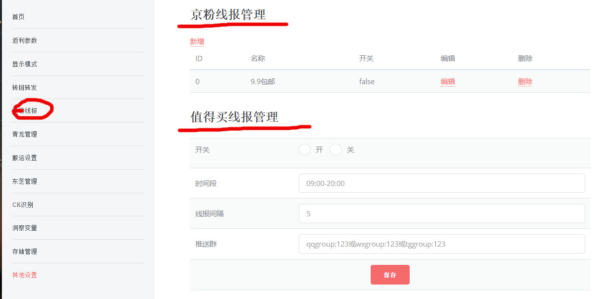

本页面目录
autMan后台地址：http://autMan的域名或ip:autMan端口/fanli/static
1.京粉线报
可以实现京粉APP内线报的自动转链转发，包含好券商品、精选卖场、9.9包邮、京东配送、实时热销榜、为你推荐、数码家电、 超市、母婴玩具、家具日用、美妆穿搭、图书文具、今日必推、京东好物、京东秒杀、拼购商品、高收益榜、自营热卖榜、 秒杀进行中、新品首发、自营、京东爆品、首购商品、高佣榜单、视频商品、历史最低价商品榜、极速版商品、新人价商品 京喜9.9、京喜秒杀、秒杀未开始、时尚趋势品、3C新品、智能新品、3C长尾商品、时尚新品、时尚爆品、京喜自营、选品库 等
2.值得买线报
值得买线报依托值得买推荐生成自己短链后进行推送